物理学家理查德·费曼（Richard Feynman）认为，如果人类即将失去所有的科学知识，而只能将一个关于科学的语句留给这个后殖民世界，那应该是描述物质如何由原子所构成的一句话。本着这种精神，如果我们只能将一点点数学知识传给后代，则应该是下面这个问题的解答：究竟有多少质数？
费曼语录：“所有事物都是由原子组成的——原子由更小的粒子组成，它们永恒地运动着，相互吸引又相互排斥，防止融为一体。”
数学思想从计数开始。我们日常用来计算的数字是熟悉的：1，2，3，等等。因为不存在而无法计数的——但需要给这个不存在一个数字符号——指向了数字0。当我们把这些自然数相加或相乘，结果总是得到另一个自然数。但减法给我们带来了一些麻烦：当我们从5中减去3，5–3，这没问题。但是如果我们用另一种思路来做减法3–5，其结果就不是一个自然数。为了解决这个问题，我们制造了负数–1，–2，–3，等等。
总的来说，所有这些正数、负数与0，统统被称为整数。数学家们使用固定的大写Ｚ来表示所有整数的集合：
Ｚ={…,-4,-3,-2,-1,0,1,2,3,4,…}
分数是由整数导致的问题。虽然我们可以将两个整数相加、相减或相乘，并确保其结果是整数，但是两个整数相除的结果可能不是一个整数。
已知两个正整数为a和b，如果a÷b的结果是一个整数，我们就说a可以被b整除。我们也可以说b是a的因数，或者说b是a的约数。
例如，24可以被6整除（因为24÷6的结果是一个整数），但是24不能被7整除（因为24÷7的结果不是整数）。每个正整数本身都可以被自己整除：如果a是一个正整数，那么a÷a=1，1当然是一个整数。每个正整数都可被1整除，因为如果a是正整数，则a÷1=a。
如果一个正整数只包含两个正约数——1和它本身，这个数字就被称为质数。
比如，17就是一个质数，因为它的正除数是1和17。同样，2也是质数。
相对应的，18不是质数，因为它除了可以被1和它自身整除之外，还可以被2，3，6和9整除。那些与18相似特性的数字被称为合数。准确地说，合数是指除了1和它本身之外，还可以被其他正整数整除的正整数。
这个分类方式将除了1之外的正整数分为了质数与合数。我们称1为幺元（unit）。正如一些人因为冥王星不被认为是一颗行星而感到烦恼，也有一些人因为1不被认为是质数的事实而感到被“冒犯”。我们将解释为什么1拥有自己独立的类别。
为单独的一个数（1）创建一个类别名称（幺元）有点奇怪。事实上，“幺元”这个术语在高级数学中有着更广泛的指代，不过当适用于正整数时，它仅指1这个数。
总而言之，我们有三类正整数：
●只有一个正约数的幺元，
●拥有两个正约数的质数，
●拥有三个或更多正约数的合数。
注意，1是正整数中唯一的幺元，而合数是无限多的，数字4、6、8、10、12，等等，都是合数（远不止这么多）。
那么，质数有多少个呢？
因数分解是将正整数表示为因数的乘法的过程。以数字84为例，我们可以用几种不同的方式分解出84的因数，如：
2×42，3×28，12×7，2×6×7和21×4
把84进行因数分解的最终方法是将所有的项都分解为质数，如：84=2×2×3×7。因为每一项都是质数，所以我们不能再对这些因数进行更小的分解。当然，我们也可以将额外的因数1包括进去，比如：
84=1×1×2×2×3×7
这就是我们将整数1排除在质数的定义之外的原因。我们将质数看作是通过乘法构建任何正整数的无法再简化的数字。数字1在这方面是没有意义的。
但这额外的项将表达式变得更为冗长，而非简化，并且它们也无法将任何项分解成更小的因数。
我们再举另一个例子：120。我们可以先把120分解为12×10，然后再分别将12和10分解为2×2×3和2×5，于是：
120=（2×2×3）×（2×5）（A）
或者，我们可以从120=4×30开始，然后得出4=2×2和30=2×3×5。于是：
120=（2×2）×（2×3×5）（B）
重要的是，除了出现的顺序不同，表达式（A）和（B）中的因数是一样的。图形展示如下。
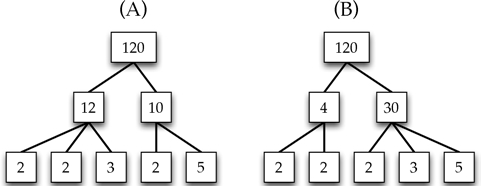
任何将120转变为质数乘积的方法都会产生完全相同的结果。
定理是关于数学的陈述，可以用反证法证明。
这个唯一分解（unique factorization）的性质建立在以下定理中。
定理（算术基本定理）
每个正整数都可以被因式分解为质数，并且这种分解是唯一的（除了因数的顺序）。
定理完全不同于科学理论，后者是由实验证据支持的物理世界在某方面的模型或解释。它与数学理论也不相同，后者是在一个特定主题下的定义和定理。
做几点解释，对于一个数字，比如30，上述定理的含义很容易弄明白，我们可以将30分解为因数2×3×5或5×3×2，这些因数是相同的——除了各项的顺序。但对于如13这样的质数，13唯一的因式分解就是被其本身分解。那1呢？一般来说，一个空积（empty product）等于1；也就是说，没有任何项的乘法问题最终值为1。
通过将质数组合在一起，我们构建出所有正整数。质数是乘法的原子。
我们不介绍算术基本定理的证明。这在大多数关于数字理论的书籍中都可以找到：整数属性的数学研究。一个数的0次方，是空积的一个例子。根据定义，10n是将10乘以自身n次的结果。在n=0的情况下，100等于1：没有任何项相乘的结果！[1]
让我们回到最开始的问题：有多少质数？答案如下：
定理
质数的数量是无限多的。
这个结果归功于欧几里得。他的证明是数学瑰宝。我们不能通过收集数据来证明这个定理。我们能观察到质数频繁出现，前几个质数是：
2，3，5，7，11，13，17，19，23，29，31，37，41，43，47，53，59，61和67
但是，随着质数序列的深入，质数之间的差距越来越大。只需看上面的质数列表，连续质数之间的最大差距是6（例如，在53到59之间）。但是质数89和97相差的结果是8，它们之间的所有整数都是合数。类似的，139和149是连续的质数，它们相差10。往后来看，连续质数之间的差距越来越大。这可能预示着最终质数会“消亡”。但事实上，尽管我们在探索越来越广大的整数世界的过程中，质数变得越来越少，但质数的序列是无止境的。不过，为了令人信服，我们需要进行证明。
关键的问题是：如果质数是有限的呢？
假若质数是有限多的。
如果我们可以证明“质数是有限多的”这个假设将导致我们得出一个荒谬的结论，那么这个假设就是错误的。就像福尔摩斯的思路那样，一旦我们排除了不可能（质数是有限多的），剩下的就是事实：质数是无限多的。
下面是对这个论点的高级概述。
1. 假设质数是有限多的。
2. 证明这个假设会导致不可能的结果。
3. 由于假设导致了逻辑上的不可能，所以我们可以得出结论，这个假设是错误的。
4. 因此，质数是无限多的。
这个过程就像用谎话诱导一个被指控的犯罪分子：
“你说你事发当晚在家里，无名氏先生？”
“是的。”
“你在做什么？”
“看电视。”
“你知道当天晚上停电了吗？”
“呃……”
显然，无名氏先生并没有在家看电视！
开始证明！我们假设有有限多的质数，然后看看这个假设让我们得出什么结论。
如果只有有限多的质数，那么就存在一个最大的质数P——质数序列中的最后一个质数。整个质数序列将如下所示：
2，3，5，7，11，13，…，P
接下来，我们将所有这些质数相乘，并将结果加上数字1。我们将那个巨大的数字称为N：
让我们想象一下，13是最后的质数。如果是这样，那么N就等于（2 × 3 ×5 × 7 × 11 × 13） +1，等于30,031。
N=（2×3×5×7×11×13×…×P）+1
N是质数吗？根据我们的假设，答案必然是否定的，因为N大于P，而P是最后一个质数。因此，N是合数且必定能被质数整除。这里是我们陷入困境的地方。
我们知道N有一个质数因数，这个因数可能是2吗？我们说N不可能被2整除。请看N的表达式，并注意括号中的部分是偶数，因为它包含了因数2：
N=（2×3×5×7×11×13×…×P）+1
因此，N比一个（巨大的）偶数大1；换句话说，N是奇数，因此不能被2整除。
没关系。我们知道N肯定有一个质数因数；就算2不是这个因数也没关系。那么是3吗？再看一下括号中的内容，注意它还是3的倍数：
N=（2×3×5×7×11×13×…×P）+1
因此，N比一个（巨大的）3的倍数大1。这意味着如果我们尝试计算N÷3，会得到余数是1。因此N也不能被3整除。
接下来会发生什么？我们来试试下一个质数吧，5。我们发现N也不能被5整除，因为它比5的倍数大1：
N=（2×3×5×7×11×13×…×P）+1
用这样的方式，我们可以得出结论，N不能被7或11或13或任何质数整除！
我们知道了什么？我们关于质数是有限多的假设，导致我们得出了下面两个结论：
●N可以被质数整除。
●N不能被任何质数整除。
这是不可能的！而摆脱这个困境的唯一出路就是承认，质数是有限多的假设是错误的。因此，质数是无限多的！
我们刚刚所做的证明被称为反证法（proof by contradiction）。在这个证明中，我们假设欲证明的命题的反面为真，如果它导致了一个不可能的情况，则断定我们所做的假设必定为假，则我们试图证明的命题为真。这属于精彩的谬误推理法。
但其实还有另一种方式可以证明：本质上这种方法是一个质数制造机。我们把少量的质数喂入机器，然后，瞧，新的质数被制造出来了。以下是该机器的工作原理。
我们先挑选6个质数：2，3，5，7，11和13。我们将所有这些质数相乘，然后加1产生一个新的数字：
（2×3×5×7×11×13）+1=30,031
我们注意到30,031不能被2整除；这显而易见，因为它的最后一位是奇数。它也不能被3整除（因为它比2×3×5×7×11×13，即3的倍数大1）。同样地，它不能被5、7、11或13中的任何一个整除。因此，它要么是一个质数，要么作为它的因数的质数不在最初的列表中。然后我们发现30,031是合数，因式分解为59×509；而59和509不在原始列表中。
我们现在可以拿这些新的质数，加上原来的六个质数制造出一个新的数字：
（2×3×5×7×11×13×59×509）+1，等于901,830,931，而这恰好是质数。
我们可以将这个新的质数投入到不断变长的列表中，并生成一个新的数字，它或者本身就是另外一个质数，或是可以分解为其他的质数。我们可以无限重复这个过程来产生越来越多的质数。
有一些复杂的方法用于确定一个数字是否是质数；这些方法可以在普通的计算机上快速完成。
还有许多证明方法可以证明质数是无限多的，下面是另一个证明方法。
如第一个证明，我们假设质数是有限多的，并表明这种推理会导致矛盾。我们假设最大的质数是P，所以整个质数列表是：
2，3，5，7，11，13，…，P
设N是所有这些数字相乘的积：
N=2×3×5×7×…×P
让我们考虑从1到N的所有数字。其中，除1之外，其中的每一个数字都可以被一个或多个质数整除；毕竟，每一个（除1以外）都能被某些质数整除。
从1到N的数字中有多少可以被2整除？很明显，是其中的一半数字（偶数）。让我们删除它们，只剩下奇数：
1，3，5，7，9，11，13，15，17，19，21，23，25，27，29，31，33，35，37，39，41，43，45，47，…
1和N之间没有被删除的整数数量是N/2。
从剩下的数字中，我们来排除3的倍数。剩下的是：
1，5，7，11，13，17，19，23，25，29，31，35，37，41，43，47，49，53，55，59，61，65，…
这里删除了剩余数字的
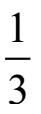
。未被删除的数字数量是之前的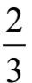
，即N×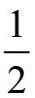
×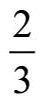
。我们继续删除5的倍数，从而删除剩余数字的
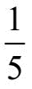
，留下N×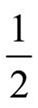
×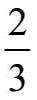
×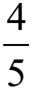
的数字。至此还剩的数字是：1，7，11，13，17，19，23，29，31，37，41，43，47，49，53，59，61，67，71，73，77，79，…
到目前为止尚未被删除的整数的数量为N×
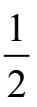
×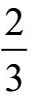
×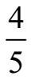
。接下来，我们删除7的倍数，剩下完整列表的
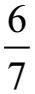
，然后继续直到最后删除P的倍数。最后，我们没有删除的数字数量是：
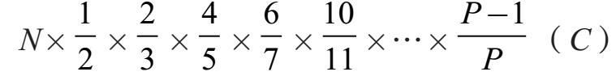
由于从1到N的所有数字，除了1，都可被一些质数除尽，表达式（C）应该结果为1。是这样吗？记住，N=2×3×5×…×P；当我们将其代入（C）中，并将各因数分配给对应分母，结果是：
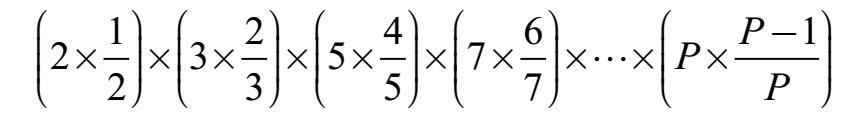
等于
1×2×4×6×···×（P–1）
这个算式得出的数字比1大得多！因此，必定等于1的表达式（C）显然不等于1。“错误”就在于我们假设质数是有限的。因此，质数必然是无限多的。
质数有许多迷人的问题，在这里我们将介绍两个极为著名的。
尽管质数的数量无限多，但随着小心地逼近越来越大的数字，它们也变得越来越稀少。稍后（第7章），我们会探讨大质数之间的平均差。然而，质数通常会出现得很近。除了质数2和3之外，最小的两个质数之间的差可以是2。相差为2的质数对被称为孪生质数（twinprimes）。最小的一对孪生质数是3和5。在1到10,000之间，有205对孪生质数，其中最后一对是9929和9931。
问题是：是否有无限多的孪生质数？
迄今为止，答案未知。
另一个问题来自德国数学家克里斯蒂安·哥德巴赫（Christian Goldbach），他生活在1690年至1764年，他想知道偶数（除了2）是否可以表示为两个质数之和。例如：
4=2+2 6=3+3 8=3+5 10 =3+7
12=5+7 14=7+7 16=5+11 18 =5+13
20=3+17 22=11+11 24=7+17 26=13+13
问题是：我们能永远这么排列下去吗？哥德巴赫猜想的准确表达是，每个偶数（大于2）都可以写成两个质数之和。
迄今为止，答案未知。
质数的研究属于数学的数论（number theory）分支。关于数论，英国数学家戈弗雷·哈罗德·哈代写道：
迄今尚未有人发现数论用于任何战争目的……
G.H.哈代，《一个数学家的独白》（剑桥大学出版社，1940）
哈代无法预见我们如今的全球电脑网络，其安全性已经取决于质数。怎么会这样？
为了说明乘法相对于逆向运算的因数分解相对容易，请尝试用铅笔和纸张来计算下面的两个问题。一方面，计算227×281的积。如果你仔细工作，可以很快得出六位数的答案。另一方面，尝试手算找出得出211,591的两个三位数质数。这个过程可不轻松。答案见[1]。
假设P和Q是两个大质数——比如说每个都是百位数。电脑可以瞬时计算出N=P×Q的乘积。但是，如果我们只是知道了N的结果，并要求逆向计算找到它的两个质数，对我们来说是有困难的。没有人知道如何能有效地找到这么大数字的因数。
（确定一个数字是否是合数的过程可以很快，但找到合数的大因数则很困难，这种现象令人感到好奇。）
令人惊奇的是，这种不对称——乘法容易而分解困难——已经被用于开发密码。公钥加密系统（public key cryptosystem）是指，一个人能够充分公开如何将信息进行加密却不用担心被他人破解为明文的系统。虽然这套系统的细节超出了本书关注的范围，但其主要思想是加密密钥使用的是两个大质数乘积的合数N：N=P×Q。想要解密则需要知道P和Q是哪两个数字。对N的披露不会泄露其因数，因为计算这些是极其困难的。当我们进行网购的时候，公钥加密系统就会发挥作用。在网页浏览器向商家发送我们的信用卡号码之前，它获得商家的公钥加密方法。我们的浏览器使用该方法对信用卡号进行编码。因为知道加密方法不会危及解密方法（只有商家知道），互联网上的窃密者就无法窃取信息。一旦加密的信息到达商家的计算机，则私钥将用于把信用卡号显示给指定的接收者。
术语公钥是指披露加密过程——加密方法的关键是公开的——不会危及解密方法。20世纪70年代，罗恩·瑞费斯特（Ron Rivest）、阿迪·沙米尔（Adi Shamir）和伦纳德·阿德尔曼（Leonard Adleman）发明了一种实现这一目标的方法。这种方法以他们名字的首字母缩写命名——RSA。
此外，公钥密码学具有军事效用，甚至可能控制原子弹的部署。
[1]上一页因式分解的答案：211591=457×463。